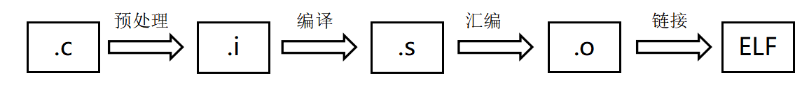
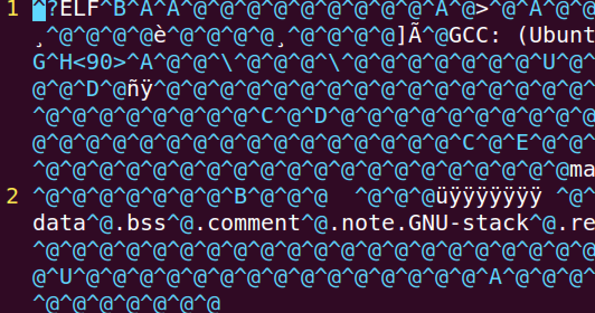
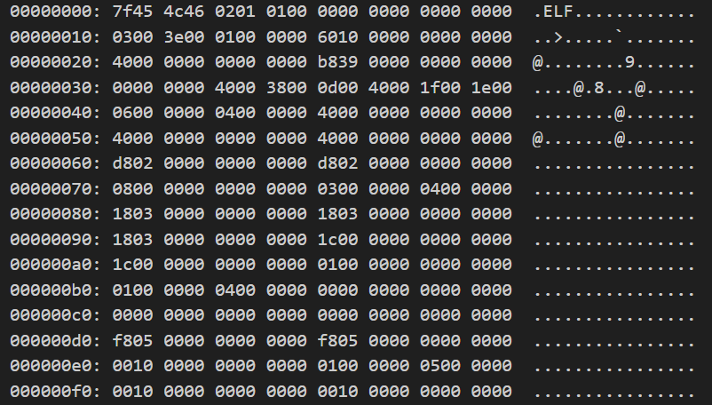

编译工具链
编译及相关工具介绍
从编译到执行
我们即将用 C 语言来实现操作系统内核，但是 C 语言这样的高级语言离机器能够理解和运行还有不小的差距。对于一个不复杂的应用程序来说（例如 helloworld），让它运行起来的最简单的方式是使用 GCC 编译，输入以下命令：
在同级文件夹下将会生成一个可执行文件 hello。这里需要注意的是，这个 hello 文件目前是存放在硬盘上的，而计算机执行程序的时候需要从内存取指令，这就意味着我们在执行它的时候， hello 的程序代码首先被搬到了内存中。那么，这个搬运的过程是不是原封不动地将代码从硬盘拷贝到内存呢？并没有这么简单，这个可执行文件实际上是 ELF 格式的，而不仅仅是简单平铺的目标机器代码。关于 ELF 格式的具体内容会在未来的实验中进一步学习，在这里只需要知道，这个 ELF 文件中有许多不同作用的段，除了包含目标代码的代码段，至少包括数据段、bss 段，还可能包括字符串表、符号表、动态链接信息、调试信息、只读数据段等各种各样的段。总结来说，所谓 ELF 文件只是 Linux 系统在硬盘中存放二进制程序的一种中间状态，仍然需要对它做进一步的解读才能让机器开始执行。
当我们有多个 C 文件时，事情发生了变化。一方面，我们可以和单文件一样，将多个文件名同时提供给 gcc 作为参数，直接产生可执行文件，例如：
这样一个命令其实包含了多个行为，GCC 编译器首先会将每个c文件单独编译，各自产生一个 ELF 文件，这些文件包含了目标代码，称为目标文件（.o文件）。但显然每个 ELF 文件都是不完整和无法运行的，main.c 里可能调用了一个位于 hello.c 的函数，这就需要进行一步链接操作，将多个 ELF 文件拼合起来。具体来说，链接过程需要合并各个 ELF 文件的段，合并符号表，并且对变量、函数等重定位，让不同文件中的函数能互相调用。上面这个命令的效果等同于以下操作：
在我们的项目源文件数量比较少时，似乎看不出独立编译再链接这个行为的意义，直接将所有文件放到一起直接编译出完整的可执行文件好像更省事。随着工程规模的增加，模块化的设计越来越有必要，对整个工程进行完整编译的时间成本显著提高，并且对代码中一个小地方的改动要将所有文件从头重新编译，还伴随着库文件重复编译的问题等等。
编译流程
为了更好地理解和控制编译的行为，以帮助我们写出符合需要的代码，还需要进一步了解编译过程中的几个步骤： 预编译、编译、汇编、链接（如图所示）。

-
预编译：识别文件中的一部分宏，如
#define、#include等，完成文本级的替换，此时还不涉及对代码实际功能的操作。 -
编译：将高级语言（C 语言等编程语言）转化为汇编语言，汇编语言仍然是文本形式的，无法直接运行，但是比 C 语言的文本结构简单的多，看上去基本就是机器语言的样子了。
-
汇编：将汇编语言转化为机器能识别的二进制目标代码，到这一步这个程序才初步具备了被执行的一些要素。
-
链接：将多个分离的二进制代码合并成最终的可执行文件。
下面将通过一个简单的例子来具体阐述各个阶段的行为。项目代码有 hello.h、hello.c、main.c 三个文件。这 3 个文件主要完成输出”hello world”的简单工作。
hello.h
hello.c
main.c
预编译
GCC编译器可以分步执行上述编译过程中的每个步骤，我们只需要在gcc命令后面添加参数-E就可以只进行预编译这第一步，现在我们在终端输入下列命令：
我们打开生成的文件，hello.i 和 main.i，可以发现，里面的内容如代码所示。这里只展示 main.i，因为 hello.i 引用了标准输入输出，导致预编译完的文件很长，限于篇幅不再展示。
# 1 "main.c"
# 1 "<built-in>"
# 1 "<command-line>"
# 31 "<command-line>"
# 1 "/usr/include/stdc-predef.h" 1 3 4
# 32 "<command-line>" 2
# 1 "main.c"
# 1 "hello.h" 1
void hello_world();
# 2 "main.c" 2
int main()
{
hello_world();
return 0;
}
可以发现，相对于预编译之前，生成的新文件只是简单地做了一下宏替换，将 include 的头文件的内容放进了文本中，而没有进行任何语言间的转化。
编译
在编译这一步骤，编译器要正式开始工作了。同理，我们将刚才生成的 .i 文件继续编译，添加 -S 参数，在终端输入以下命令：
我们打开生成的.s文件，发现里面内容如下（同样只展示main.s,如代码所示）：
.file "main.c"
.text
.globl main
.type main, @function
main:
.LFB0:
.cfi_startproc
pushq %rbp
.cfi_def_cfa_offset 16
.cfi_offset 6, -16
movq %rsp, %rbp
.cfi_def_cfa_register 6
movl $0, %eax
call hello_world@PLT
movl $0, %eax
popq %rbp
.cfi_def_cfa 7, 8
ret
.cfi_endproc
.LFE0:
.size main, .-main
.ident "GCC: (Gentoo 9.1.0-r1 p1.1) 9.1.0"
.section .note.GNU-stack,"",@progbits
可以发现，原来的**C语言代码已经被转化成为了汇编代码**（汇编代码的种类由你所使用的编译器决定，此处例子为 X86 汇编代码），这正是编译这一步所进行的工作。在对汇编语言有基本的了解后，就能大致阅读这段代码了，层次化、结构化的高级语言被转化成了线性的、连续排列的指令，每一行都有指令助记符和操作数，以及其他必要的提示语句。
你可能知道，编译器除了将高级代码按照语言规范逐条生成效果等价的汇编语言之外，还会对代码本身做一定程度的优化，例如削减变量、常量替换、循环展开等等，这些优化大部分是在这一步完成的。
汇编
汇编这一步骤，进一步将编译所生成的汇编代码转化成机器能识别的二进制机器代码，然后将其中的数据、代码等以 ELF 格式打包成目标文件。我们在终端里输入以下命令：
打开生成的 .o 文件，里面的内容如图所示。是的！我们生成的文件已经是一个二进制文件，里面存放的数据都是只有机器才能识别的机器代码啦。除了少量的字符串作为数据保存，其余部分已经无法以文本的格式阅读了。

链接
到目前为止，我们生成的文件有 main.o 和 hello.o 这2个二进制文件，但是因为它们是彼此分离的，现在还不能直接运行。所以，我们需要通过链接这一重要的步骤，将彼此分离的二进制代码合并成最终的可执行文件。我们在终端输入以下命令：
最终，我们的“Hello World”项目从3个文件，合并成为了1个名为 main 的可执行文件，操作系统可以去执行它并且打印出“Hello World！”。是不是很神奇？在链接阶段，我们也经常会直接调用链接器 ld 代替 gcc ，它们的效果是一致的。
编译优化
在内核编程中，熟知编译优化相关的知识非常重要。成熟的内核代码一定要经得起编译优化，在优化中保证行为的正确性。我们熟知的 Linux 内核就是使用 -O2 编译优化选项进行编译的。gcc 提供了不同级别的优化选项，可以在编译时添加 -OX 选项指定，其中 'X' 代表编译优化级别。
在这里，我们以往届学生在使用编译优化选项时出现的问题为例，提醒大家在编写代码时一定要考虑不同的优化选项下生成的目标代码的行为差异。
案例分析
下面代码展示了一段往届同学使用内联汇编进行系统调用的错误代码。这里大家不用深究系统调用的概念，只需要知道该段代码的功能是将参数中的 sysno 放置到 a7 寄存器中，arg0 arg4 分别按顺序放置到 a0 a4 寄存器中。
static long invoke_syscall(long sysno, long arg0, long arg1, long arg2,
long arg3, long arg4)
{
long res;
asm volatile(
"add a7, zero, a0\n\t"
"add a0, zero, a1\n\t"
"add a1, zero, a2\n\t"
"add a2, zero, a3\n\t"
"add a3, zero, a4\n\t"
"add a4, zero, a5\n\t"
"ecall\n\t"
"mv %0, a0"
:"=r"(res)
);
}
在调用 invoke_syscall 函数时，根据 RISC-V 函数调用 ABI 中指定的参数放置规定，sysno 已经放置到了 a0 寄存器中，剩余的参数也按照顺序保存到了 a1 a5 寄存器当中。于是，在内联汇编代码中只做了简单的寄存器值交换动作。
下面展示了invoke_syscall 的一个简单封装调用。
int exhibit(int mbox_idx, void *msg, int msg_length)
{
return invoke_syscall(SYS_EXHIBIT,\
(long)mbox_idx, \
(long)msg, \
msg_length, IGNORE, IGNORE);
}
这段代码在 -O0 优化选项下自然没有任何问题，因为 RISC-V ABI 会将正确的参数传递到对应的寄存器中。但在 -O2 优化选项下，invoke_syscall 函数会被优化为内联函数，同时， gcc 识别到传递给 invoke_syscall 的参数没有被使用到，因此直接将传参的步骤省去，优化后的代码等价于代码 ，直接丢失了原本要保存到 a7 寄存器中的 SYS_EXHIBIT 参数，并且参数也没有按照预期移动到 a0 a4 寄存器当中。
int exhibit(int mbox_idx, void *msg, int msg_length)
{
long res;
asm volatile(
"add a7, zero, a0\n\t"
"add a0, zero, a1\n\t"
"add a1, zero, a2\n\t"
"add a2, zero, a3\n\t"
"add a3, zero, a4\n\t"
"add a4, zero, a5\n\t"
"ecall\n\t"
"mv %0, a0"
:"=r"(res)
);
}
这段原本在 -O0 选项下可以正常工作的代码在 -O2 下出现了问题。具体的原因在于，我们需要在内联汇编中告诉编译器需要使用到具体的参数，使得编译器优化时保证参数的正确传递，如代码 所示。
static long invoke_syscall(long sysno, long arg0, long arg1, long arg2,
long arg3, long arg4)
{
long res;
asm volatile(
"mv a7, %[sysno]\n\t"
...
:"=r"(res)
:[sysno] "r" (sysno)
:"r" (sysno) ...
);
}
经过了上述的流程，你应该已经对一个项目从编译到执行的步骤有了清楚的认识，但仍然会有一些问题在困扰你：难道每编译一次项目都要手打这么多复杂命令吗？链接是通过什么规则将这些可执行文件合并在一起的呢？生成的可执行文件要如何在不运行的情况下做静态分析，以确定编译出的机器码符合我们的预期呢？
当然，这些问题我们都将在接下来的部分具体阐述：介绍项目编译利器 —— Makefile 、如何通过链接器脚本控制我们的链接过程、以及方便快捷的反汇编命令 —— objdump 。
Makefile
类似上面的例子，我们使用几行简单的命令就能够轻易地搞定一个小程序的编译过程，那么对于更大的程序呢？例如，我们即将着手实现的内核可能会有数十个 C 文件需要编译，这些文件分散在以程序逻辑结构划分的诸多文件夹内；而一个实际的软件工程项目中，文件更是成百上千，显然不可能依靠人工手动逐个编译链接起来。
那么写一个 shell 脚本如何？shell 脚本允许我们将需要执行的编译命令预先写好，需要编译的时候只需要运行这个脚本就可以了。这种方法没有手动编译繁琐，但是可扩展性仍然很受限。一方面，编译的时候除了要关心编译哪个文件，还需要管理好头文件、静态链接库、预定义的参数、繁多的编译选项等等，要写出这样一个脚本就是繁重的重复劳动，一旦其中某个文件做了修改，需要重新编译的时候，整个脚本的全部流程都要重新执行一遍；另一方面，如果项目功能调整，需要增加或者删除文件，或者文件目录结构发生了变化，就要仔细校对脚本中每个相关的地方，并且保证别的命令不能出错或者缺乏依赖，要维护这样一个脚本的成本过于高昂。
所幸，在 Linux 下，有着 Makefile 这一利器，它能够帮助我们简化书写，执行编译过程。Makefile 仍然是一个脚本文件，在 shell 中能完成的指令同样都可以写入 Makefile 作为其自动化流程的一部分。与 shell 不同的是，你只需要设定好编译的规则，而不需要为每个单独的文件特意编写一条命令。一条规则一般包括目标、依赖、规则内容三部分，目标和依赖会用冒号分隔，具体的规则另起一行，例如我们在目录中创建一个名为 “Makefile” 的文件：
hello: hello.o main.o
gcc hello.o main.o -o hello
hello.o: hello.c
gcc -c hello.c -o hello.o
main.o: main.c
gcc -c main.c -o main.o
想要完成 hello 这个目标，你只需要一条简单的命令：
或者Makefile默认会完成第一个目标：
Makefile 的一个很大的优势在于，它能够自动管理规则之间的依赖，当你想完成 hello 这个目标的时候，它就会先将其依赖的 main.o 和 hello.o 完成；此外，Makefile 每次被执行的时候并不会从头开始，例如，某个源文件 hello.c 被修改了需要重新编译，那么 make 命令在运行前扫描文件的时间戳，就会发现 hello.c 的最后修改时间发生了变化，从而识别出依赖 hello.c 的 hello.o 和 hello 这两个目标需要被重新执行，而不需要重新执行 main.o 这个目标。这样就实现了我们想要的增量编译，在文件数量很多的情况下，能够大大节省每次编译花费的时间。
Makefile 的优点可以总结为：规则式管理（编译什么，按什么顺序，怎么编译）、增量式编译、一般不需要做大幅修改。
在本次操作系统实验课中，大部分的项目代码我们都已经写好了 Makefile ，大家只需要能够看懂简单的 Makefile 并且学会使用它。除了编译，其他许多需要执行的命令也会一并整合进 Makefile ，例如启动 QEMU 模拟器、拷贝镜像进 SD 卡等等，省去翻找和输入命令的时间，只需要使用“make 目标”这样一行命令，就可以一步执行对应的所有指令。如果你对某个操作具体使用了哪些命令感兴趣，可以参看这些 Makefile 。
这里再给出一个实用的 make 参数 -n ，使用这个参数能够看到你即将运行的一次 make 将会具体执行什么样的命令，而不实际执行它们。例如，在只修改了hello.c之后可以运行：
到这里，你可能会觉得上面那种 Makefile 写起来还是太麻烦，比 shell 脚本没有好多少，这是因为 Makefile 还有很多能提高生产力的写法和技巧，例如默认变量、自动变量、函数、默认规则等等。但这些规则很难一下子全部掌握，一个复杂的 Makefile 也有一定的理解门槛，如果你仍希望更加深入的理解 Makefile ，熟悉掌握相关知识的话，可以查阅网上更多的资料（ Make 命令教程）（如何调试 makefile 变量）（跟我一起写 makefile），了解如何编写Makefile。
链接器脚本
前几节中说过，在链接阶段，多个 .o 文件会被合并成为一个 ELF 格式的可执行文件。ELF 里包含各种段，每个段包含的内容也不一样，有的包含数据，有的包含代码。在刚才的 demo 里，我们直接使用了 gcc 命令进行链接，这个链接使用了默认的规则，因此生成的ELF文件的布局，比如代码段与数据段的位置，我们都是不清楚的。但在内核编译的过程中，我们需要将很多内容放到固定的位置，比如内核的入口函数地址（清楚了入口地址，我们才能跳到这里去运行内核代码）、栈堆地址等等。因此，我们需要自己制定规则，去布置各个段在ELF文件中的位置，这就是链接器脚本的功能。
链接器脚本的书写是一个繁琐的过程，我们已经在大家以后的代码框架中准备好了链接器脚本，配合 Makefile 一起使用，直接使用就可以了。如果想要在链接过程中使用自己写的链接器脚本（.lds文件），可以在 ld 命令中加入 -T 参数指定。
此外，在汇编或者 C 代码中，链接器脚本里面定义的符号是可以直接引用的，例如表示数据段起始位置的符号__DATA_BEGIN__。但是请注意，只有这个符号的地址是有意义的，这个地址里面并没有存放什么有意义的值。所以在汇编中，我们可以使用 la 指令来加载其地址；在 C 语言中，可以先声明 extern 之后再使用 & 获得其地址。
objdump
由于内核要在没有其他软件辅助的情况下管理机器底层的资源，需要最终生成的目标代码非常准确，C 语言在很多时候未必能精准地描述这些操作。在 C 语言编译、链接的过程中，可能会产生各种各样的不确定性，我们有时需要去检查生成的目标文件中的指令是否符合预期。但是，目标文件本身是个二进制文件，无法以文本的形式展现出来，我们可以使用 xxd 命令来以16进制的文本打印这个文件：
屏幕上会看到如图的输出。

从这里，你可以看到这个文件的全貌，左侧是以16进制打印的内容，右侧是试图以 ASCII 码方式读取 16 进制内容得到的字符，能够基本看出特定地址处有没有数据、是不是全0，以及链接以后各个段的排布，在检查 ELF 文件布局的时候是很有用的。
如果想更细致地调试，这样的输出仍然十分冗长，且没有被逐条翻译成汇编指令，不具备可读性。objdump 反汇编工具能够帮助我们将目标文件（.o 或者可执行文件）翻译回汇编语言，从而能逐条指令地检查代码正确性，是我们定位问题的有力手段。
例如，如果我们想反汇编一个可执行文件 hello 包含代码的部分，可以输入命令：
表示将反汇编出的汇编结果输出到 hello.S 文件中，在该文件中能看到不同的段、不同的函数下具体的指令。使用不同的编译工具链中的 objdump 以反汇编不同指令集下的目标代码。进一步，如果在编译时加入了 -g 选项，表示目标文件会包含调试信息，那么反汇编时可以使用 -S 参数将反汇编结果和 C 代码对应起来，以及 -l 参数将结果与源文件和行号对应起来。例如：
如果只想看特定某个段的内容，还可以加入-j <section>选项来指定。以上是最常用的 objdump 命令的使用方法。